Introdução
Wise Wallet
O objetivo do site é fornecer um controle de finanças através de gráficos, assim como proporcionar possíveis métodos de divisão de dinheiro de forma que o usuário escolha entre as opções que mais lhe agradam, assim como o acompanhamento do cartão de crédito, se o usuário desejar.
Informações Gerais
- Projeto: Wise Wallet
- Repositório GitHub: Wise Wallet
- Membros da equipe:
Contexto
Os problemas que estamos enfrentando incluem a falta de controle financeiro, dívidas, a busca por investimentos seguros, educação financeira e um melhor gerenciamento de despesas.
Problema
Estamos lidando com desafios significativos, como a falta de controle financeiro, acúmulo de dívidas e insegurança na escolha de investimentos seguros. É crucial aprimorar nossa educação financeira para melhor gestão dos recursos e implementar estratégias eficazes de controle de gastos. Com conhecimento e disciplina, podemos alcançar uma estabilidade financeira sólida e sustentável.
Objetivos
Iremos desenvolver um site cujo sua função e proporcinar para o usuário um controle financeiro atraves de gráficos, assim como um acompanhamento do cartão de credito por meio de gráficos e por fim sugestões personalizadas de como resolver o problema financeiro do usuário de acordo com as opções pré-definidas(Dívidas,investimentp,controle,economia,etc). As opções aida estão em análize.
Justificativa
Após realizar entrevistas com diversas pessoas enfrentando problemas financeiros, identificamos que os principais culpados são as dívidas, tanto as comuns quanto as do cartão de crédito. Além disso, a falta de educação financeira agrava essa situação. Nosso objetivo é tornar a gestão financeira mais acessível e compreensível, utilizando gráficos detalhados de gastos e ganhos para ajudar as pessoas a visualizarem melhor suas finanças. Através dessas ferramentas visuais, esperamos capacitar indivíduos a tomar decisões financeiras mais informadas, reduzir suas dívidas e alcançar uma estabilidade financeira a longo prazo. Com uma abordagem educacional prática, acreditamos que é possível transformar hábitos financeiros e promover uma vida financeira mais saudável para todos.
Público-alvo
Usuário Inexperiente em Finanças e Tecnologia: Conhecimentos prévios: Pouca ou nenhuma experiência em questões financeiras, precisa de orientação básica. Relação com a tecnologia: Pode ter dificuldades em usar aplicativos e ferramentas online, necessita de uma interface intuitiva e fácil de usar. Relações hierárquicas: Pode não ter uma posição hierárquica relevante, como um estudante ou alguém em início de carreira. Usuário Intermediário em Finanças e Tecnologia: Conhecimentos prévios: Alguma compreensão sobre finanças pessoais, mas busca aprimorar seu conhecimento. Relação com a tecnologia: Confortável com o uso de aplicativos e ferramentas online, mas prefere interfaces claras e diretas. Relações hierárquicas: Pode ocupar cargos intermediários em empresas ou ser um empreendedor em crescimento. Usuário Avançado em Finanças: Conhecimentos prévios: Possui um bom entendimento de finanças pessoais e busca ferramentas avançadas para análise e tomada de decisão. Relação com a tecnologia: Muito familiarizado com aplicativos e tecnologias financeiras, busca funcionalidades sofisticadas e personalizáveis. Relações hierárquicas: Pode ocupar cargos de gestão em empresas ou ser um investidor experiente.
Concepção (Design Thinking)
Detalhes do processo de discovery do projeto.
Apresente o processo de discovery do projeto. Com foco na experiência do usuário, esse processo abrange a compreensão do contexto do problema e das características do usuário, a definição do problema, a geração de ideias, a prototipagem e a elaboração de uma proposta de solução
Processo de Design Thinking
O arquivo que se segue apresenta o resultado desse processo.
Apresente o processo de Design Thinking realizado pelo grupo e documentado por meio do software Miro. No documento apresentado, devem ser incluídos: (1) a matriz CSD, (2) o mapa de stakeholders, (3) as personas, (4) as respectivas propostas de valor e (5) o processo de ideação identificando as ideias levantadas e sua priorização.
Especificações do Projeto
Documentação das especificações do projeto.
Apresente as especificações do projeto, incluindo as histórias de usuário e os requisitos funcionais e não funcionais.
Histórias de Usuários
Com base na análise das personas foram identificadas as seguintes histórias de usuários:
Apresente aqui as histórias de usuário que são relevantes para o projeto de sua solução. As Histórias de Usuário consistem em uma ferramenta poderosa para a compreensão e elicitação dos requisitos funcionais e não funcionais da sua aplicação. Se possível, agrupe as histórias de usuário por contexto, para facilitar consultas recorrentes à essa parte do documento.
| Entrevistador: | Olá, Ana Clara. Obrigado por ter aceitado essa entrevista. Hoje, vamos conversar sobre sua situação financeira para entendermos melhor seus objetivos e desafios. | |
|---|---|---|
| Ana Clara: | Olá, fico feliz em estar aqui. | |
| Entrevistador: | Para começar, conte-me um pouco sobre você. Você tem 28 anos, é cozinheira em um restaurante e mora em uma cidade do interior de Minas Gerais. Você gosta de cozinhar e passar tempo com sua família nos seus momentos livres. Qual é a sua renda mensal? | |
| Ana Clara: | Eu recebo dois salários mínimos, então minha renda líquida é de R$2.472,00. | |
| Entrevistador: | Você tem alguma renda adicional além do seu salário? | |
| Ana Clara: | Não, no momento não tenho. | |
| Entrevistador: | Você consegue poupar algum dinheiro todo mês? | |
| Ana Clara: | Não consigo. No final do mês, sempre fico com pouco dinheiro e tenho que fazer dívidas para pagar as contas. | |
| Entrevistador: | Você tem algum objetivo financeiro específico? | |
| Ana Clara: | Sim, meu objetivo principal é quitar minhas dívidas e conseguir comprar uma casa própria para mim e minha família. | |
| Entrevistador: | Com base nas informações que você me deu, podemos identificar alguns desafios que você enfrenta em relação às suas finanças. Primeiro, você não consegue poupar dinheiro, o que dificulta o alcance do seu objetivo de quitar suas dívidas e comprar uma casa. Segundo, você tem um alto gasto com alimentação. | |
| Ana Clara: | Sim, eu concordo. Preciso encontrar maneiras de reduzir minhas despesas e aumentar minha renda para poder realizar meus sonhos. | |
| Entrevistador: | Tendo isso em vista Ana Clara, pode-se dizer que você precisa de algum auxílio para melhorar sua situação, correto? Recomendo ficar de olho nas atualizações do lançamento do software WiseWallet © que irá te guiar para um futuro financeiro mais próspero! Muito obrigado por nos ajudar nessa pesquisa. | |
| Ana Clara: | Muito obrigada a vocês! | |
| Usuário do sistema | Monitorar minhas despesas | Ter uma visão clara da minha renda mensal e procurar oportunidades para aumentar a renda. |
| Administrador | Monitorar uso do sistema | Identificar áreas que precisam de melhorias e assegurar que o sistema está atendendo às necessidades dos usuários. |
Requisitos
As tabelas que se seguem apresentam os requisitos funcionais e não funcionais que detalham o escopo do projeto.
Com base nas Histórias de Usuário, enumere os requisitos da sua solução. Classifique esses requisitos em dois grupos:
- Requisitos Funcionais (RF): correspondem a uma funcionalidade que deve estar presente na plataforma (ex: cadastro de usuário).
- Requisitos Não Funcionais (RNF): correspondem a uma característica técnica, seja de usabilidade, desempenho, confiabilidade, segurança ou outro (ex: suporte a dispositivos iOS e Android).
Lembre-se que cada requisito deve corresponder à uma e somente uma característica alvo da sua solução. Além disso, certifique-se de que todos os aspectos capturados nas Histórias de Usuário foram cobertos.
Requisitos Funcionais
| ID | Descrição do Requisito | Prioridade |
|---|---|---|
| RF-001 | Página Inicial com informações do grupo e do projeto | ALTA |
| RF-002 | Fórum de Tira-Dúvidas | MÉDIA |
| RF-003 | Usuário ter a opção de trocar a senha | MÉDIA |
| RF-004 | Página de edição de perfil para usuário | MÉDIA |
| RF-005 | Graficos de gastos fixos e variaveis (mês avulso) | ALTA |
| RF-006 | Graficos de linha do resultado final | ALTA |
| RF-007 | Formulário de Cadastro de informações | ALTA |
| RF-008 | Páginas de sugestões em geral | ALTA |
| RF-009 | Formulário de updates de informações | ALTA |
| RF-010 | Dúvidas frequentes interligado com o fórum | MÉDIA |
Requisitos Não-Funcionais
| ID | Descrição do Requisito | Prioridade |
|---|---|---|
| RNF-001 | O formulário de cadastro de informações deve ser facilmente utilizável em telas pequenas, como smartphones e tablets, sem perda de funcionalidade. | ALTA |
| RNF-002 | As páginas de updates de informações devem se adaptar a diferentes tamanhos de tela para garantir uma boa experiência de usuário em dispositivos móveis. | ALTA |
| RNF-003 | Ao gerar gráficos de linha do resultado final, o sistema deve apresentar os dados solicitados em até 3 segundos. | MÉDIA |
| RNF-004 | Consultar dúvidas frequentes no sistema deve levar no máximo 3 segundos para retornar os resultados. | BAIXA |
| RNF-005 | Os gráficos de gastos devem ser capazes de renderizar dados de grandes volumes de forma eficiente. | MÉDIA |
| RNF-006 | As páginas de sugestões devem ser exibidas corretamente em todos os navegadores suportados. | MÉDIA |
| RNF-007 | A página de gráficos de gastos deve estar disponível e funcional em praticamente todos os momentos para os usuários. | ALTA |
Projeto de Interface
Artefatos relacionados com a interface e a interacão do usuário na proposta de solução.
Apresente a ideia de interface que está sendo prevista para o projeto. Inclua os wireframes, o user/screen flow e o protótipo interativo.
User/Screen Flow e Protótipo interativo
Artefatos relacionados com a interface e a interacão do usuário na solução proposta.
O fluxo de usuário (User Flow) é uma técnica que permite ao desenvolvedor mapear todo fluxo de telas do site ou app. Essa técnica funciona para alinhar os caminhos e as possíveis ações que o usuário pode fazer junto com os membros de sua equipe. 
Um protótipo interativo apresenta o projeto de interfaces e permite ao usuário navegar pelas funcionalidades como se estivesse lidando com o software pronto. Veja o exemplo a seguir.
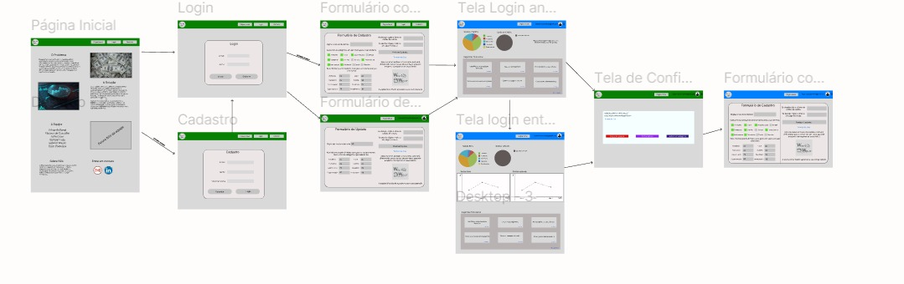
Wireframes
Protótipo de telas do sistema em baixa fidelidade (rascunhos).
Os Wireframes são protótipos das telas da aplicação usados em design de interface para sugerir a estrutura de um site web e seu relacionamentos entre suas páginas. Um wireframe web é uma ilustração semelhante ao layout de elementos fundamentais na interface. 
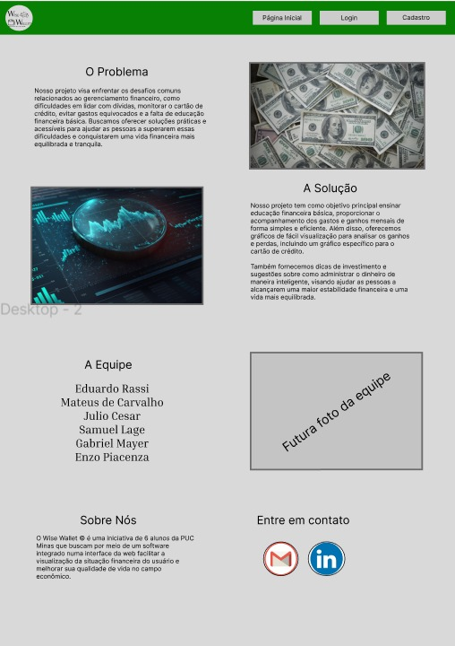
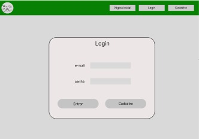
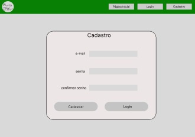
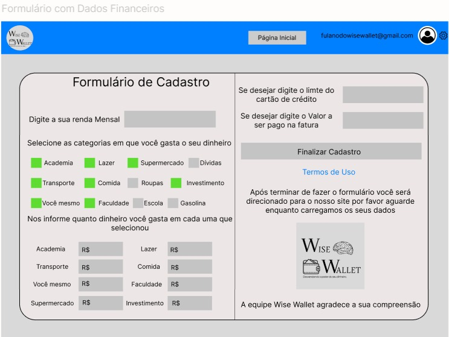
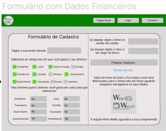
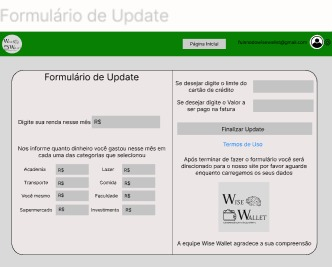
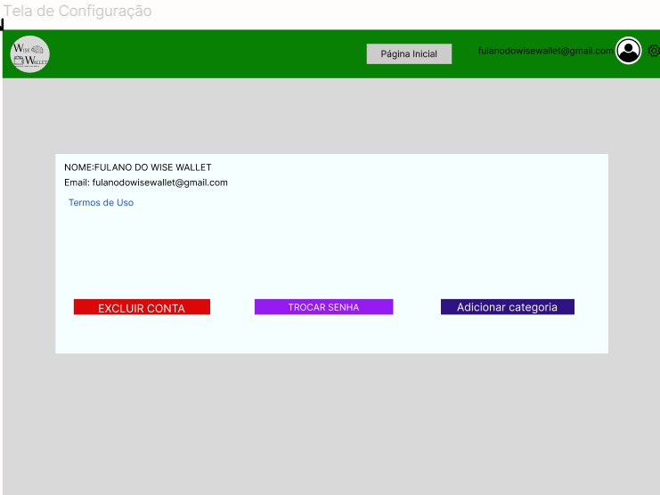

 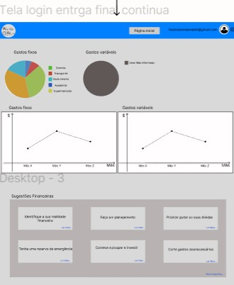
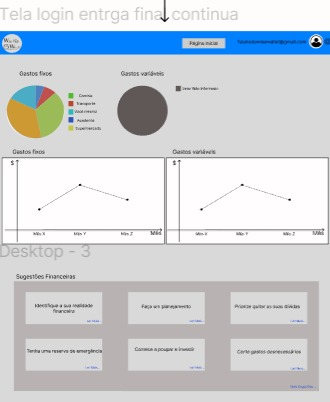
Metodologia
Detalhes sobre a organização do grupo e o ferramental empregado.
Nesta parte do documento, você deve apresentar a metodologia adotada pelo grupo, descrevendo o processo de trabalho baseado nas metodologias ágeis, a divisão de papéis e tarefas, as ferramentas empregadas e como foi realizada agestão de configuração do projeto via GitHub.
Coloque detalhes sobre o processo de Design Thinking e a implementação do Framework Scrum seguido pelo grupo. O grupo poderá fazer uso de ferramentas on-line para acompanhar o andamento do projeto, a execução das tarefas e o status de desenvolvimento da solução.
Ferramentas
Relação de ferramentas empregadas pelo grupo durante o projeto.
Liste as ferramentas empregadas no desenvolvimento do projeto, justificando a escolha delas, sempre que possível. Inclua itens como: (1) Editor de código, ferramentas de comunicação, ferramentas de diagramação, plataformas de hospedagem, entre outras.
| Ambiente | Plataforma | Link de Acesso |
|---|---|---|
| Processo de Design Thinking | Miro | https://miro.com/app/board/uXjVKdBXmIg=/ |
| Repositório de código | GitHub | https://github.com/ICEI-PUC-Minas-PPLCC-TI/ti-1-ppl-cc-m-20241-1-wise-wallet |
| Hospedagem do site | Heroku | https://XXXXXXX.herokuapp.comEXEMPLO |
| Protótipo Interativo | MavelApp ou Figma | https://www.figma.com/design/unsLrjRPIQSpTmSOvCnMcP/Untitled?node-id=0-1&t=ceLEK8Wo7ZZgPAyo-1 |
Gestão do Projeto
Divisão de papéis no grupo e apresentação da estrutura da ferramenta de controle de tarefas (Kanban).
Apresente a divisão de papéis e tarefas entre os membros do grupo. Informe quem é o Scrum Master, o Product Owner e os desenvolvedores. Informe também quem é o responsável pela documentação do projeto.
Apresente o quadro de gerenciamento do time (Kanban), seu formato e as experiências na utilização dessa ferramenta (GitHub Projects)
Divisão de Papéis no Grupo:
Nesse projeto todos da equipe foram ScrumMaster, Product Owner e desenvolvedor em algum momento, porque era o primeiro projeto de todos e precisavamos aprender e entender todas as funções.
Controle de Versão
Estrutura do fluxo de trabalho no ambiente do GitHub.
Discuta como a configuração do projeto foi feita na ferramenta de versionamento (GitHub). Exponha como a gerência de tags, merges, commits e branchs é realizada. Discuta como a gerência de issues foi realizada.

Nós definimos criar branch para cada página html do nosso projeto.
Branches: Master, Forum, Configuracoes,Formulario-update,Pagina-Projeto-Final,Pagina-Prjeto-Inicial,Formulario-Cadastro,Página-Inicial
Solução
Esta seção apresenta todos os detalhes da solução criada no projeto.
Apresente cada uma das funcionalidades que a aplicação fornece tanto para os usuários quanto aos administradores da solução.
Inclua, para cada funcionalidade, itens como: (1) titulos e descrição da funcionalidade; (2) Estrutura de dados associada; (3) o detalhe sobre as instruções de acesso e uso.
Video do Projeto
O vídeo a seguir traz uma apresentação do problema que a equipe está tratando e a proposta de solução.
O video de apresentação é voltado para que o público externo possa conhecer a solução. O formato é livre, sendo importante que seja apresentado o problema e a solução numa linguagem descomplicada e direta.
Utilize o recurso de compartilhamento via embed e inclua o vídeo logo abaixo.
...... COLOQUE AQUI O SEU VIDEO ......
Funcionalidades
Esta seção apresenta as funcionalidades da solução.
Apresente cada uma das funcionalidades que a aplicação fornece tanto para os usuários quanto aos administradores da solução.
Inclua, para cada funcionalidade, itens como: (1) titulos e descrição da funcionalidade; (2) Estrutura de dados associada; (3) o detalhe sobre as instruções de acesso e uso.
Funcionalidade 1 - Formulário para cadastro de dados
Permite a adição dos gastos para nosso sistema começar a funcionar
- Estrutura de dados: Clique aqui para ser direcionado
- Instruções de acesso:
- Abra o site e efetue o login
- Acesse o menu principal e escolha a opção Formulário
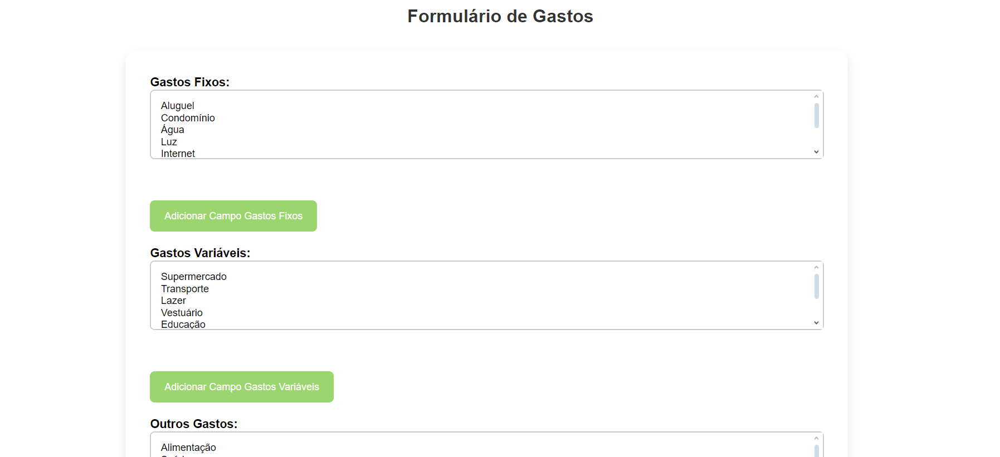
Funcionalidade 2 - Editar Perfil
Permite ao usuário editar o perfil pessoal para caso de alguma informação errada ou necessidade de atualizar
- Estrutura de dados: Clique aqui para ser direcionado
- Instruções de acesso:
- Após efetuar o login, usuário tema a opção de entrar no perfil clicando no ícone do header
- Acesse a página editar perfil.
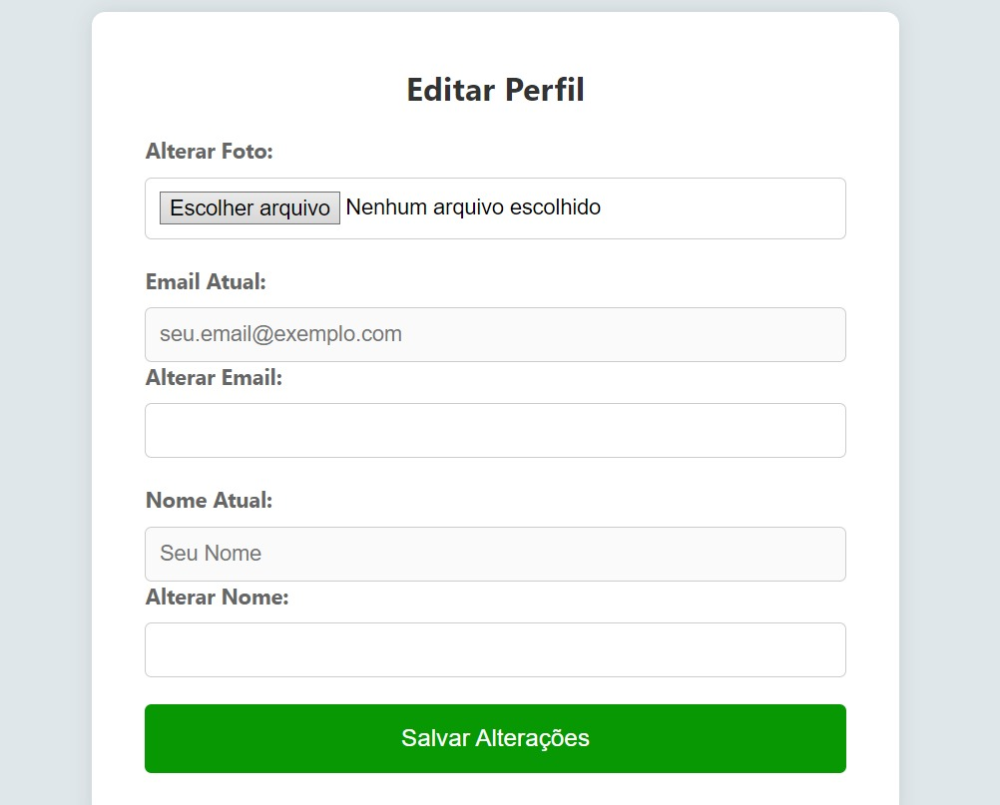
Funcionalidade 3 - Trocar Senha
Permite ao usuário editar sua senha em caso de necessidade ou esquecimento
- Estrutura de dados: Clique aqui para ser direcionado
- Instruções de acesso:
- Após efetuar o login, usuário tema a opção de entrar no perfil clicando no ícone do header
- Acesse a página trocar senha.
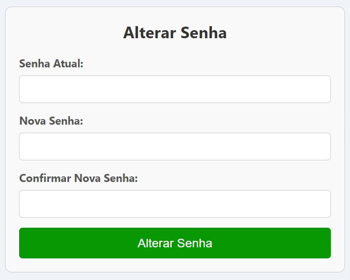
Funcionalidade 4 - Login
Permite ao usuário logar no sistema
- Estrutura de dados: Clique aqui para ser direcionado
- Instruções de acesso:
- Quando entrar no site o usuário clica no botão de login no header
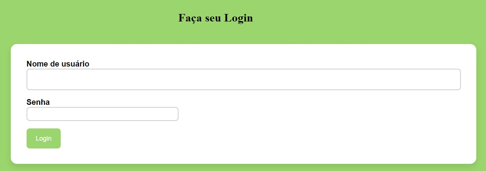
Funcionalidade 5 - Cadastro
Permite ao usuário se cadastrar e começar a usar nosso site
- Estrutura de dados: Clique aqui para ser direcionado
- Instruções de acesso:
- Quando entrar no site o usuário clica no botão de cadastro no header
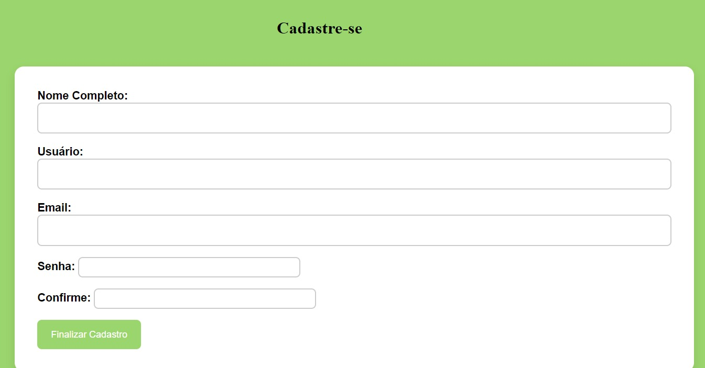
Funcionalidade 6 - Fórum de Tira-Dúvidas
Permite ao usuário enviar mensagem, visualizar todas as mensagens, editar e excluir.
- Estrutura de dados: Clique aqui para ser direcionado
- Instruções de acesso:
- -----------------------
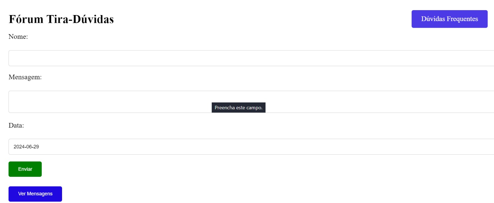
Funcionalidade 7 - Página de Dúvidas Frequentes
Permite ao usuário entrar em uma página para conferir se a dúvida dele já está respondida lá
- Estrutura de dados: Clique aqui para ser direcionado
- Instruções de acesso:
- Quando o usuário estiver na parte do Fórum, ele pode clicar no botão "Duvidas frequentes" e ele será redirecionado para essa aba
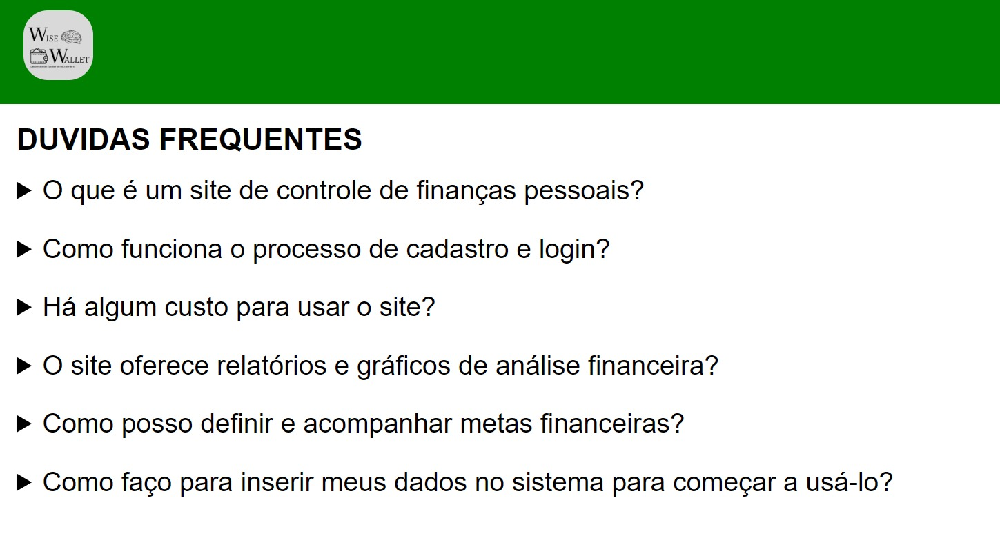
Funcionalidade 8 - Página de Resultado Único
Permite ao usuário visualizar seu resultado único(mensal) para ter um controle das finanças
- Estrutura de dados: Clique aqui para ser direcionado
- Instruções de acesso:
- Quando o usuário preencher o formulário ele já terá disponível o resultado único
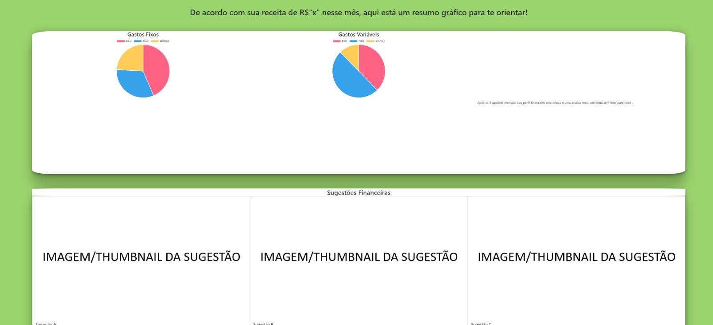
Funcionalidade 9 - Página de Resultado Final
Permite ao usuário eentrar em uma página para conferir seu resultado mais completo após três meses- Estrutura de dados: Clique aqui para ser direcionado
- Instruções de acesso:
- Quando o usuário estiver utilizando o nosso sistema à três meses, ele receberá nosso resultado final mais completo
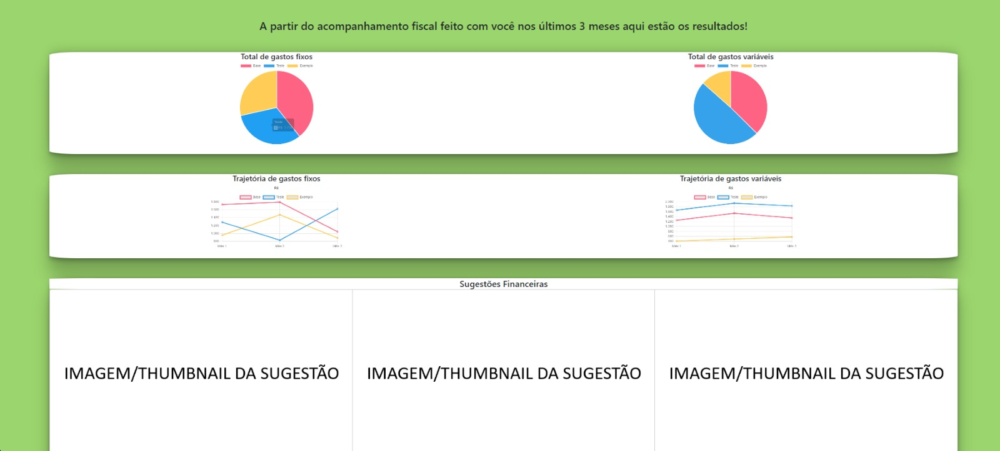
Estruturas de Dados
Descrição das estruturas de dados utilizadas na solução com exemplos no formato JSON.
Apresente as estruturas de dados utilizadas na solução tanto para dados utilizados na essência da aplicação quanto outras estruturas que foram criadas para algum tipo de configuração
Nomeie a estrutura, coloque uma descrição sucinta e apresente um exemplo em formato JSON.
Estrutura de Dados - Usuários
Registro dos usuários do sistema utilizados para cadastro, login e para o perfil do sistema
{
"id": 1719601291904,
"login": "gabrielmayerclary",
"senha": "senhagabriel",
"nome": "Gabriel Mayer Clary",
"email": "gabrielm05.clary@gmail.com"
}
Estrutura de Dados - Fórum
Registro/exclusão de mensagens do fórum de Tira-Dúvidas pelos usuários
"id": 3,
"nome": "Carlos",
"mensagem": "Estou gostando do fórum.",
"data": "2024-06-11"
Estrutura de Dados - Dúvidas Frequentes
Apresentação de informações advindas do Json para Dúvidas Frequentes
"question": "Como posso definir e acompanhar metas financeiras?", "answer": "Instruções sobre como criar metas financeiras, como poupança ou pagamento de dívidas,
e acompanhar o progresso dessas metas."
Estrutura de Dados - Formulários/Resultados
Recebe informações dos formulários e salva no JSON para formar o resultados necessários
"categoria": "Base",
"valor": "1347",
"id": 1
Módulos e APIs
Esta seção apresenta os módulos e APIs utilizados na solução.
Apresente os módulos e APIs utilizados no desenvolvimento da solução. Inclua itens como: (1) Frameworks, bibliotecas, módulos, etc. utilizados no desenvolvimento da solução; (2) APIs utilizadas para acesso a dados, serviços, etc.
Images:
- Unsplash - https://unsplash.com/EXEMPLO
Fonts:
- Icons Font Face - https://fontawesome.com/EXEMPLO
Scripts:
- jQuery - http://www.jquery.com/EXEMPLO
- Bootstrap 4 - http://getbootstrap.com/EXEMPLO
FAQ
Perguntas e respostas comuns associadas ao projeto.
Apresente uma lista de perguntas e respostas comuns associadas ao projeto. Inclua perguntas como: (1) detalhes de acesso e uso do projeto; (2) informações sobre a instalação e configuração da aplicação; (3) questões sobre a manutenção da aplicação; (4) detalhes sobre a integração da aplicação com outros sistemas; (5) questões sobre a segurança da aplicação.
HTML: Para estruturar o conteúdo da aplicação.
CSS: Para estilizar a aplicação e torná-la visualmente atraente.
JavaScript: Para adicionar funcionalidades dinâmicas e interatividade.
JSON: Para armazenar e gerenciar os dados das transações.
Gráficos: Exibem a distribuição de receitas e despesas ao longo do tempo, com gráficos de barras e pizza.
Dados Detalhados: Incluem resumo de receitas, despesas, saldo atual, e uma lista detalhada de todas as transações.
Sugestões: Oferece dicas para melhorar sua saúde financeira, como identificar onde reduzir despesas ou sugerir orçamentos futuros.
Esses recursos proporcionam uma visão clara e completa da sua situação financeira.
Referências Bibliográficas
Esta seção apresenta as referências bibliográficas utilizadas no projeto.
Apresente as referências bibliográficas utilizadas no projeto. Inclua itens como: (1) livros, artigos, tutoriais, etc. utilizados no desenvolvimento da solução; (2) links para sites, blogs, etc. utilizados no desenvolvimento da solução.
...... COLOQUE AQUI O SEU TEXTO ......